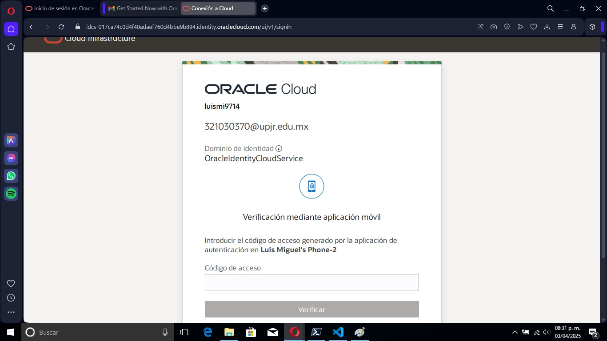
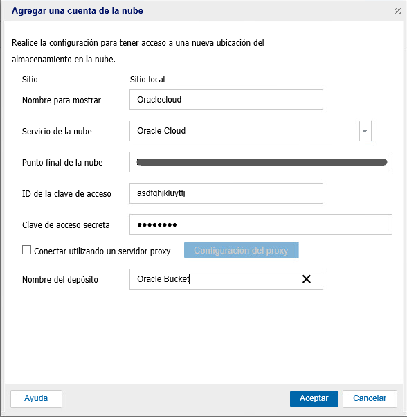
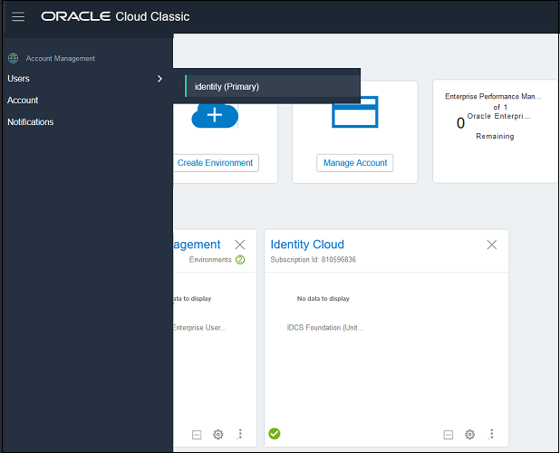
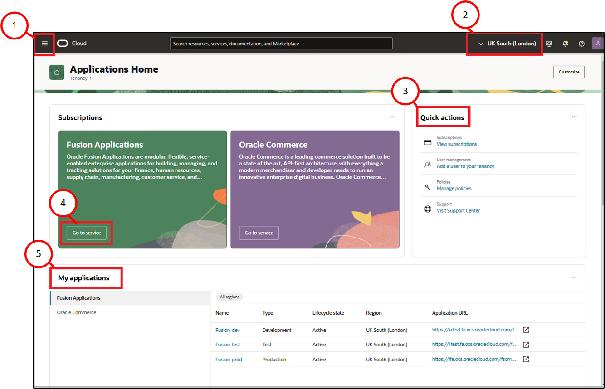
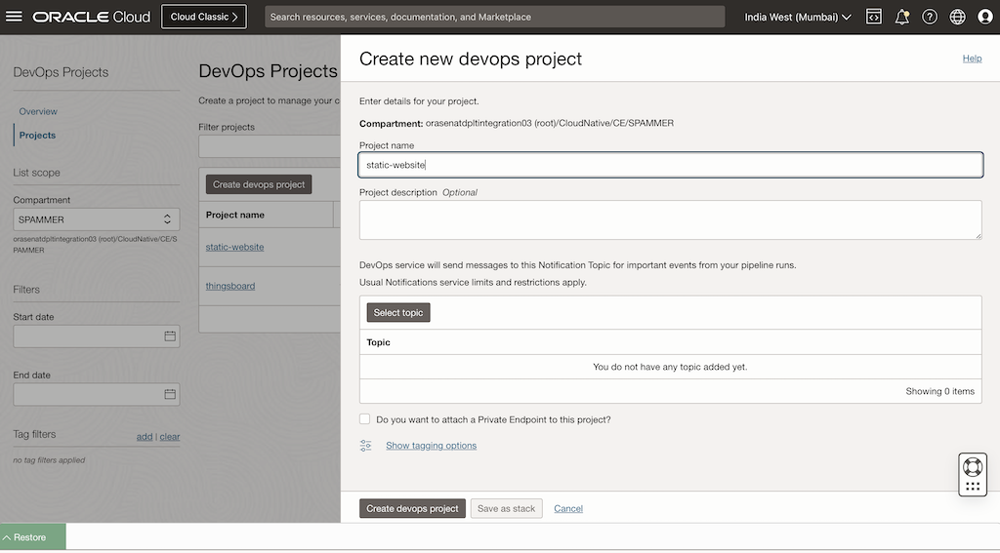

Índice
- Introducción a Oracle Cloud
- Paso 1: Acceder al Sitio Web de Oracle Cloud
- Paso 2: Verificación de Correo Electrónico
- Paso 3: Completar la Configuración de la Cuenta
- Paso 4: Acceso a la Consola de Oracle Cloud
- Paso 5: Exploración de la Consola
- Paso 6: Creación de tu Primer Proyecto en Oracle Cloud
- Conclusión
Introducción a Oracle Cloud
Oracle Cloud es una plataforma de servicios en la nube que ofrece soluciones para computación, bases de datos, redes, almacenamiento, etc. Tener una cuenta en Oracle Cloud te permite acceder a estos servicios de forma flexible y escalable.
Paso 1: Acceder al Sitio Web de Oracle Cloud
Para comenzar, debes ir al sitio oficial de Oracle Cloud:
https://cloud.oracle.com
Paso 2: Verificación de Correo Electrónico
Revisa tu correo electrónico para recibir un enlace de verificación. Haz clic en el enlace para confirmar tu cuenta.
Paso 4: Completar la Configuración de la Cuenta
Introduce la información de pago (si es necesario) y configura tu cuenta de usuario en Oracle Cloud.
Paso 4: Acceso a la Consola de Oracle Cloud
Ahora, puedes acceder a la consola de Oracle Cloud utilizando el correo electrónico y la contraseña que proporcionaste.
Paso 5: Exploración de la Consola
Explora la interfaz de usuario de la consola de Oracle Cloud y familiarízate con los servicios disponibles.
Paso 6: Creación de tu Primer Proyecto en Oracle Cloud
Aprende a crear tu primer proyecto o servicio en Oracle Cloud, como una instancia de base de datos o un servidor virtual.
Conclusión
Ahora que tienes tu cuenta en Oracle Cloud, puedes comenzar a explorar más recursos y servicios. Consulta la documentación oficial de Oracle para obtener más detalles y aprender cómo aprovechar al máximo la plataforma.